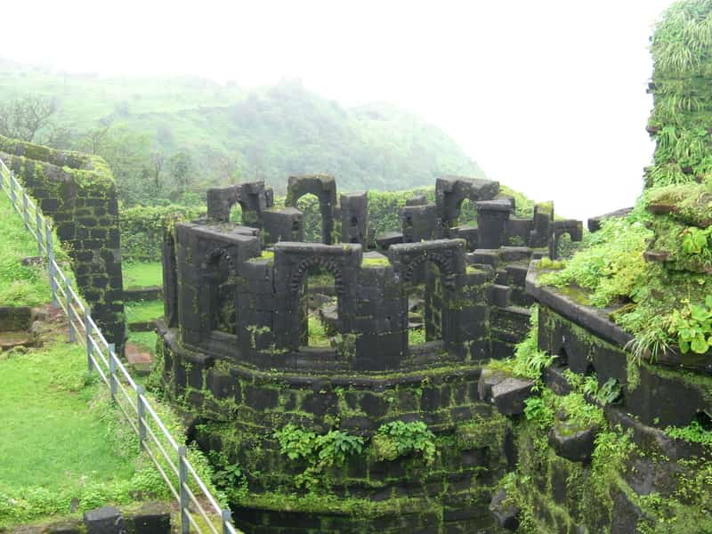

RAIGAD FORT,RAIGAD

This is one of the most important forts in Maharashtra. The capital of Shivaji’s empire, the Raigad Fort, stands 2690 feet high above sea level in the Sahyadri mountain range. The fort has a very interesting piece of history behind it.
Did you know that it was the place where Shivaji was coronated as the King of the Maratha Empire? The Raigad Fort also happens to be the place where Shivaji breathed his last. Despite it being attacked by the British, the fort today is still intact. Some important sites here are the Hirkani Buruj and the famous Maha Darwaja.
Location: Raigad
Visiting Hours: 8 am to 6 pm
Nearest Railway Station: Veer Railway Station